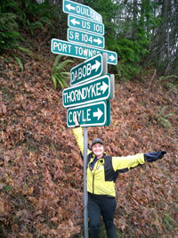

Volume 9 Issue 1 - January/February 2004
2004 Brevet Schedule
2004 Season Introduction
SIR 100 km Populaire Results
Flèche Northwest
SIR Executive Board Expanded
Road Snippets

NOTE: Please send any equipment reviews, PBP insight or ride reports for the March/April newsletter to Jon Muellner! I know most of you can write so let's generate some copy folks! Thanks to Mark and Vik for contributing for this issue!
Please have memberships renewed before the 200 km (March 20th) to reduce stress on the start of that ride you can get a Membership Application/Renewal here, fill it out and bring it with exact payment to the brevet start or send it to:
Terry Zmrhal
9531 112th Ave NE
Kirkland, WA 98033
(425) 883-1701
SIR Email List
For those of you on-line, join in the SIR email list! It's a great way to share info, ride schedules, car-pooling to events and training with other SIR members. To get on go to http://www.phred.org/mailman/listinfo/sir. It's easy!
SIR Volunteers Needed
SIR members wishing to help out on any of the brevets, please contact the organizer directly and offer your support. This is an important series this year will be easier if we all pitch in!
| Date | Distance | Organizer | Route |
|---|---|---|---|
| Mar 20 | 200 km | Greg Cox | New route from Greg's house with the famous chili feed! |
| April 10 | Peter Beeson | Tahuya Hills | |
| April 23-25 | Peter McKay | ||
| May 8-9 | 400 km | Bill Dussler | North Bend, Snoqualmie Pass, Blewitt Pass, Stevens Pass, Snoqualmie Valley, Carnation, Fall City, Snoqualmie Falls. |
| May 22 | Mark Van de Kamp, Jan Heine | Unpaved Populaire (non-RUSA event). We'll shoot for 100 km. A good day's ride, most of it unpaved. 28 mm tires minimum, but you'll be happier on 35 mm. No technical terrain, no mountain bikes required. | |
| June 5-6 | 600 km | Jon Muellner | North Cascades starting in Arlington; depending on Hwy 20 road repair |
| June 25-27 | Mark Thomas | Carson/Ephrata (same as 2003) | |
| July 10 | Dave Read, Paul Johnson, Brian List | ||
| July 24 | Dave Read, Paul Johnson, Brian List | ||
| August 14 | Robin and Amy Pieper | ||
| September 4-5 | Owen Richards | ||
| September 19 | Jan Heine | The ever-popular Mtn. 100k. Same course as this year, unless more roads vanish in the 'burbs. | |
| September 25-26 | Wayne Methner |
2004 we celebrate the 10th anniversary of Seattle International Randonneurs! It is with great respect that we thank all those riders, starting with John Wagner, who helped this club get its feet on the pedals in the randonneuring world. Our membership is more than 130 members now and we'll soon have a written history of SIR so you can get a glimpse of our growth.PBP was the culmination of much work for many randonneurs in 2003, so what happens now? Well, in addition to a complete double brevet series, there are a slew of other 1200 km events on the calendar for 2004 including the Canadian Rocky Mountain 1200 km on July 21-25, Boston-Montreal-Boston on August 19-22, Colorado Last Chance Randonnée September 13-16, and the Great Southern Randonnee October 25-29 in Australia. There's no need to feel like there's not enough to do!
According to Bill Bryant, the new President of RUSA, Seattle International Randonneurs members finished fifth in the rankings for foreign clubs with the most finishers. Your club has been awarded the Coupe Ville contrôle de Tinteniac by the Audax Club Parisien. You should note that the three top "clubs" were national contingents (Denmark, the United Kingdom, and Germany, in that order) followed by California's Davis Bike Club. So in reality, the SIR was second among actual regional cycling clubs at PBP, a most excellent performance. Bravo!
Terry Z's rides were a great success again this year and prepped everyone for the start of the season's 200 km on March 20th. Riders may want to test themselves with our 1000k in June to get experience with a longer, multi-day distance. You can keep rolling with SIR!
Tom Lawrence organized the first event of the year Saturday March 6th with over 65 cyclists at Redhook Brewery with good weather and no rain till after the ride, amazing! A new route kept everyone on their toes. It was a wonderful start to the season and it was great to see old friends and make new ones as SIR continues to grow. Here's the results of the day:
SIR 100 km Populaire Results - March 6, 2004
Name Time Jan Acuff 4:15 Dan Austad 5:34 Shane Balkovetz 5:03 John Bates 4:15 Peter Beeson 4:20 Donald Boothby 5:03 Dan Boxer 6:06 Chantel Brandvold 5:03 Christopher Brosell 4:37 Jim Carson 6:15 Chris Chamberlain 4:13 Matt Dalton 5:03 Nancy Denney 4:34 William Dussler 4:25 Roy Farrell 4:37 Carrie Ferrence 5:40 James Gladden 4:40 Bill Gobie 5:50 Doug Hallam 3:57 Jan Heine 3:34 Trent Hill 5:03 Ron Himschoot 6:25 David Huelsbeck 4:27
Name Time Christof Irran 5:20 Colin Kennedy 5:50 Sean Knoflick 4:37 Ken Krichman 5:11 Ben Larson 3:34 Teresa LeDoux-Peterson 4:27 Tony Licuanan 5:42 Pete Liekkio 4:37 Robert Magyar 5:22 David Malkin 3:53 Bob Marsh 6:25 Max Maxon 4:20 Ray McFall 4:40 Ryan McFarland 5:40 Peter McKay 4:20 Wayne Methner 4:52 Tatyena Mishel DNF Melinda Morrow 6:06 Tim Murashige 3:53 Brian Ohlemeier 3:50 Jesse Pace DNF Katie Pencke 6:15 Brian Peterson 4:27
Name Time Kenneth Peterson 5:34 Kenneth Philbrick 3:34 Amy Pieper 6:06 Wes Pieper 6:06 Faye Pieper 6:06 Robin Pieper 6:06 Michael Rasmussen DNF William Reedy DNF Andrew Repanich 4:27 Stan Reynolds 4:25 William Roberts 3:53 Mitchel Schoenfeld 4:49 Sylvia Shiroyama 5:10 Robb Simmons 6:06 James Sprague 4:49 Dave Stanton 4:39 Alex Taylor 5:39 Mark Thomas 4:27 Greg Thompson 4:34 Daniel Turner 4:10 Duane Wright 5:10 Patti Wurdeman 5:34 Terry Zmrhal 4:15
The 2004 Flèche Northwest is set for Friday, April 23-25. Peter McKay is again putting on this fun team event that will test your meddle and let you get to know your teammates real well!
The premise of the Flèche, as devised by the French, is that on Easter weekend the randonneuring clubs from around the country ride in teams from their respective towns to a common destination (in southern France) for a banquet dinner. The rules are minimal: each team comprises of 3 to 5 bicycles, they must cover a minimum of 360 Km in exactly 24 hours, they must have on course controls to insure integrity of the route and travel unsupported (except at designated controls) on a unique route from the other teams. Rumors are the word "Flèche" translates as "arrows to a target" or "spokes of a hub." The destination is usually a resort community providing a festive surrounding for waiting family and friends. Completing a Flèche is also required for attaining a Randonneur 5000 standing with Audax Club Parisien.
Seattle International Randonneurs return to Resort Semiahmoo. We will hold our banquet celebrating this year's Flèche Northwest on Sunday morning. More info to follow.
Team name, proposed route, team member names, addresses and team entry fee is due by the first week of April. Early registration is encouraged since the organizer will review route descriptions for adherenceto the Flèche rules. The organizer greatly appreciates receiving your proposed route in Microsoft Streets & Trips format. However, this is not mandatory.
They should be sent to:
Peter McKay
8837 32nd Avenue SW,
Seattle, Washington 98126-3722
(telephone 206 932 6702).The fee is $30 per team. Registration forms are available on the SIR 2004 Flèche Northwest page. Info is not finalized!
At the 2003 Fall General Meeting the membership agreed to amend the charter to expand the Executive Board to nine members (including the 3 officers). The current officers are: Paul Johnson, Peg Winczewski, Peter McKay, Amy Pieper, Mark Thomas (RBA), Terry Zmrhal (Membership/Treasurer), Jon Muellner (Newsletter/Web), Greg Cox, Wayne Methner. Thanks to all for stepping up to help make SIR a great organization.
Congratulations to Mark Thomas in his rise to the top by becoming a board member of RUSA! He's gotten a number of new awards for domestic events instituted and we're proud to have one of our own on the national rando scene.
A big thanks to Terry Zmrhal and his Winter Series VIII training rides! Great turnouts and wonderful routes!
Looks like the Rocky Mountain 1200 km has reached its limit at 100 riders, so there's bound too be a lottery for the available spots. Long time member Ron Himshooot is in line for his 6th participation! Be sure to chaeck out the site for more info as the date gets closer.
From Michael Rasmussen after a his Populaire scare: "Lesson learned: if you get some serious road rash use mayonaise to clean the road debris out of your flesh. Honest! This is straight from the ER guy who used mayonaise to clean up the scrape on my knee. He advised me to use it in the future should I manage to scrape the road without witnesses who do silly things like keep me immobile and call ambulances." Thankfully he is healing and willing to share such interesting medical advice!
Greg Cox, Bill Dussler, Paul Johnson, Peter McKay, Wayne Methner, Jon Muellner, Amy Pieper, Mark Thomas, Terry Zmrhal
Membership Fee:
$8.00 - full membership w/e-mail newsletter or
$15.00 - full membership w/printed newsletter.
Membership Address:
c/o Terry Zmrhal
9531 112th Ave NE
Kirkland, WA 98033
(425) 883-1701